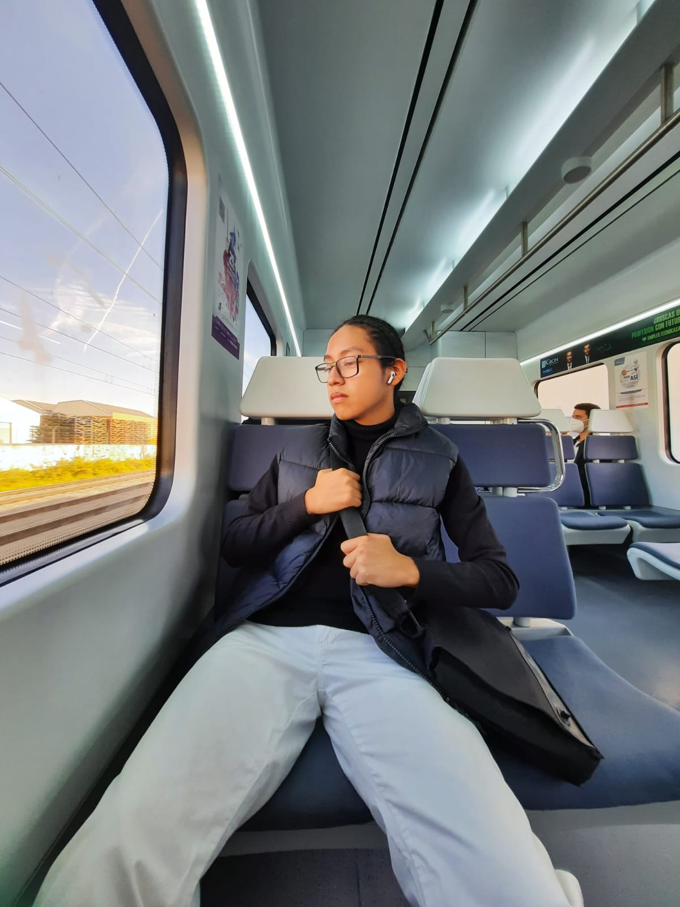
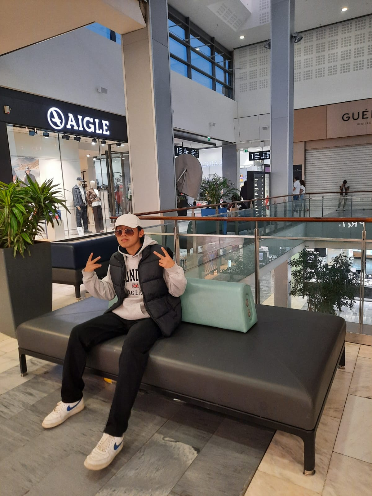
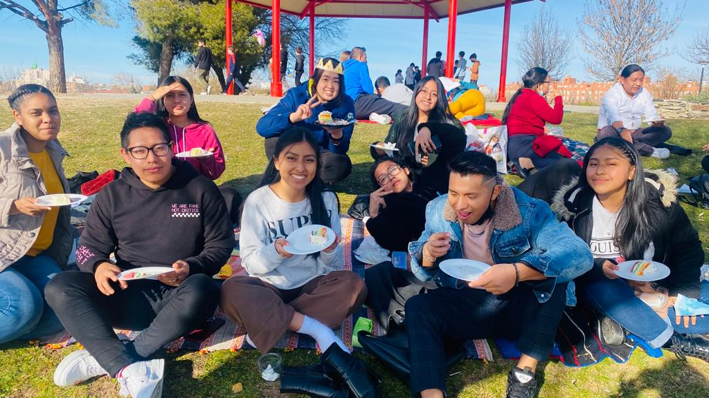

Ismael Humberto Sisa Vásquez
Sobre Mi


En este apartado voy a redactar a cerca de mi, mis gustos y las actividades
que no dejaria de hacer por nada en el mundo. Al igual dejare una aplicación
web que suelo usar amenudo, dejo un link de mi Red Social:
Instagram
Dentro de las cualidades personales, la honestidad es una caracteristica que me destaca, ya
que siempre estoy del lado de la verdad y del respeto hacia los demás.
De hecho soy una persona humilde, eso implica tener muy claro nuestros orígenes y saber
apreciar todo el aprendizaje que nos han ofrecido las distintas situaciones de la vida.
Sin duda alguna de mis cualidades personales es, la responsabilidad ya que es un valor que
nos permite tomar las riendas de nuestros asuntos, lo cual es necesario para poder seguir
adelante con los proyectos que tengamos por cumplir.

Algo que no dejaria de hacer por nada en el mundo seria quedar con mis amigos y familia, ya
que son personas importante en mi vida. Otra cosa que tampoco dejaria es seguir aprendiendo nuevos
instrumentos y seguir tocando instrumentos que ya sé como la guitarra, la bateria y el piano.